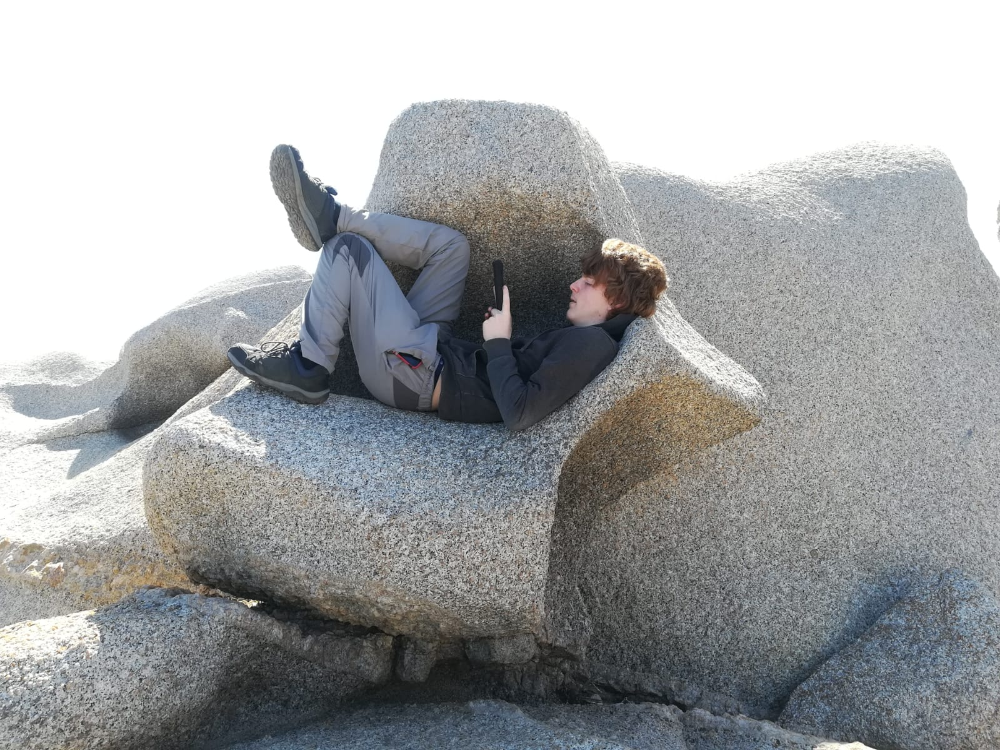

My name is Aimar Goñi Benito, I'm 21 years old and I'm from Vitoria-Gastez, in the Basque Country, Spain. I am a videogame programmer since I started studying at ESAT in the year 2021. But my passion with the video-games comes from much earlier. Since I was a child, I have felt a deep passion for not only playing videogames but also to create them, and this passion has made me start creating my own very small games since I was a child. With the years I have increase my knowlege and my interest has drifted into three main areas: AI, gameplay and graphics.
During my studies, I have gained experience with popular game engines like Unreal Engine and Unity. These tools have enabled me to create a wide range of projects, from small indie games to more ambitious and complex endeavors.
I am proud to say that I have had the opportunity to develop my own graphics engine in DirectX11 and OpenGL. This personal project has been an exciting challenge and an invaluable opportunity to delve into the more detailed technical aspects of graphics programming.
And I also have been very invested in creating new AI to use in multiple projects as simulations and agent intelligence.
I am constantly looking for new ways to improve my skills and expand my knowledge in the field of game development, and I am always willing to face new challenges that allow me to grow professionally and contribute to the evolution of this exciting industry.
